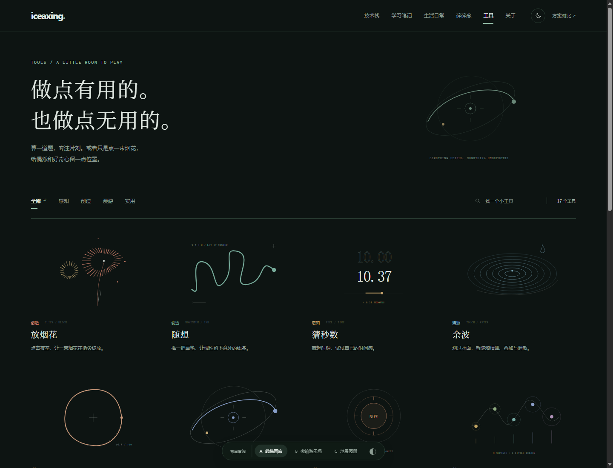
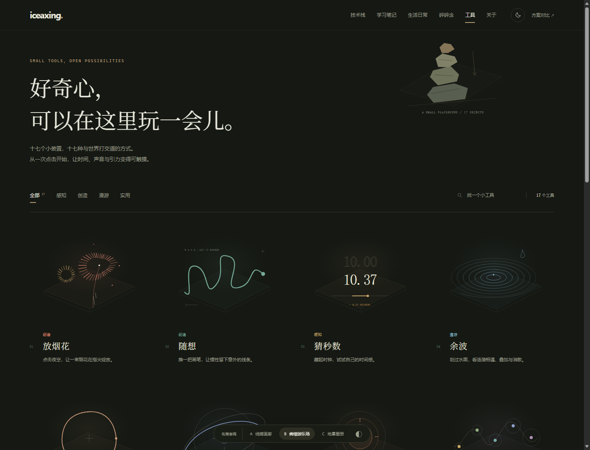
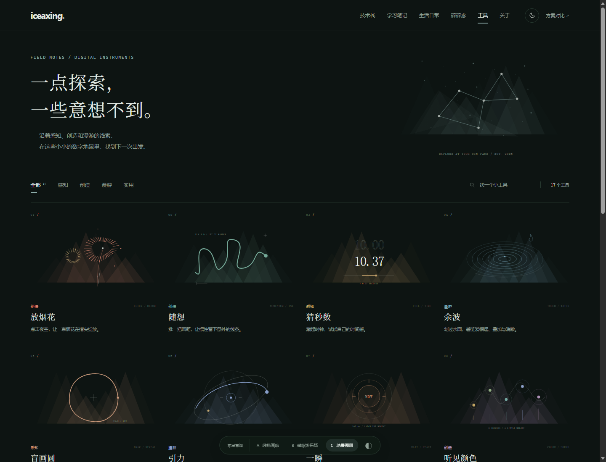

A连续四列 · 居中插画 · 轻量文字
线描画廊↗
留白最多、最克制。用线描预览建立识别，优先让名称和简介清晰、轻松地被浏览。
TOOLS GALLERY / DESIGN REVIEW
去掉侧边目录，让每件工具有一幅自己的小画。
三种视觉方向，同样的四列、透明、无边框。

A连续四列 · 居中插画 · 轻量文字
留白最多、最克制。用线描预览建立识别，优先让名称和简介清晰、轻松地被浏览。

B连续四列 · 微缩场景 · 暖色点缀
更有玩具感与亲近感。插画像悬浮在桌面的微缩装置，色彩更鲜明，工具更像可拿起来玩的物件。

C连续四列 · 几何地景 · 编号索引
最接近现有网站的山地视觉。几何切面托起工具预览，编号与简短标记让页面更像一本探索图册。
更克制选 A，更有玩心选 B，更贴近现有地景选 C。三版都包含全部 17 个工具，顶部分类与搜索可以直接试用，卡片可打开已有工具。右下方可随时切换方案与深浅色。
本地 HTML 设计样稿，尚未替换正式在线工具页面。